原创作品《100双绝望的眼睛》
绝望是走向真实的必经之路
因为在那里你无需再伪装
人类最伟大的艺术往往都是悲剧
不是因为“惨”才伟大
而是因为悲剧揭示了人生的真相
在绝望中
我们无需再考虑自己穿着是否光鲜
也不用挂念自己是不是比别人优秀
更不用操心房子和比特币
绝望可以撕下所有自欺和骄傲的遮羞布
会砸烂所有自溢的偶像崇拜
会熄灭你的美梦
腐烂你的容颜
烧毁你的钱财
踏碎你的尊严
在那一刻
你再也不能戏谑
再也不能嘲笑
再也不能油腻
再也不能勾心斗角
再也不能胡吃海喝
再也不能岁月静好
再也不能说没有时间
你必须要赤露敞开地面对自己和上帝
必须面对彻底的孤独和内心最深的渴望
必须要面对我是谁
我是否需要救赎
......
所以我有了这个想法
将一百部悲剧电影绝望的瞬间混剪在一起
在虚构和想象中让大家提前经历真实的绝望
问一下自己
我到底真正需要什么
或者
我是否真的有能力知道自己需要什么
01 闪灵
狂躁和灵感枯竭燃烧着我全部的自尊
在敲完无数遍“杰克发疯了”之后
我拿起了斧子
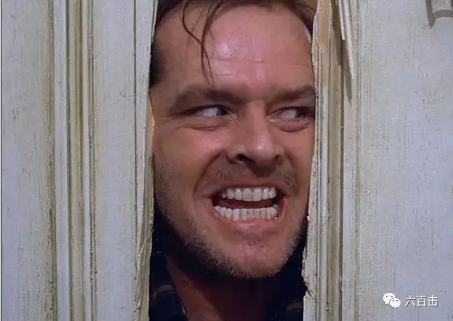
02 穆赫兰道
现实残酷如冰
我试图在梦境中寻求希望
但却是更大的绝望
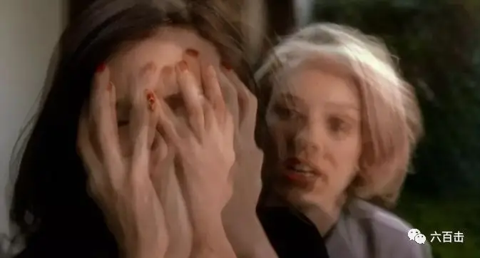
03 泡沫人生
将要绽放的爱情之花却忽然枯萎
我四处寻求帮助
但却被冰冷击穿
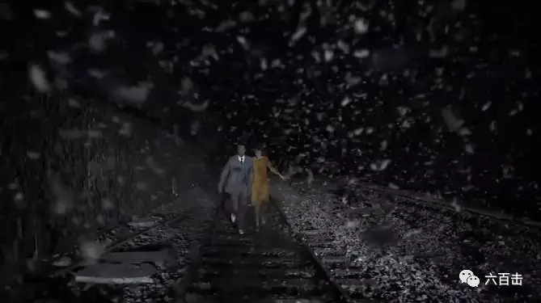
04 永远的莉莉安
我要逃离所有要伤害我的人和事
但最终我才明白我最该逃离的是希望
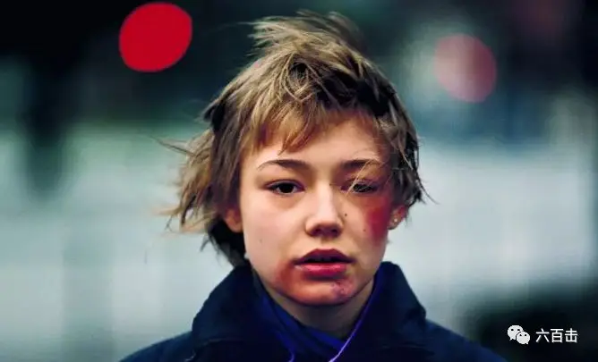
05 请不要离开
我所有的希望和温暖都被伊斯兰的荣誉所谋杀
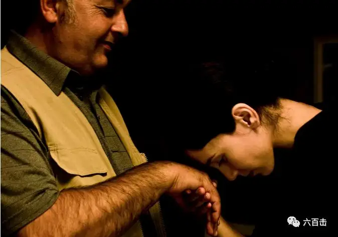
06 薄荷糖
你！真的觉得，人生美好吗
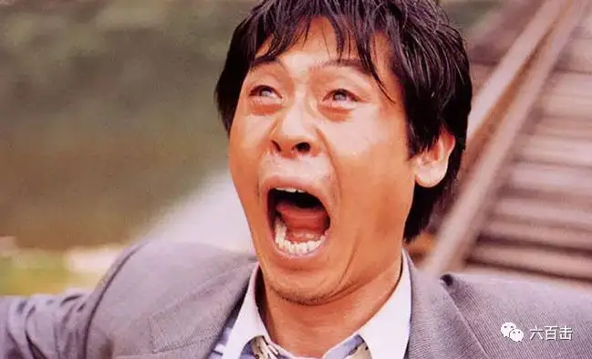
07 秋菊打官司
我不是为了钱，我就是讨个说法
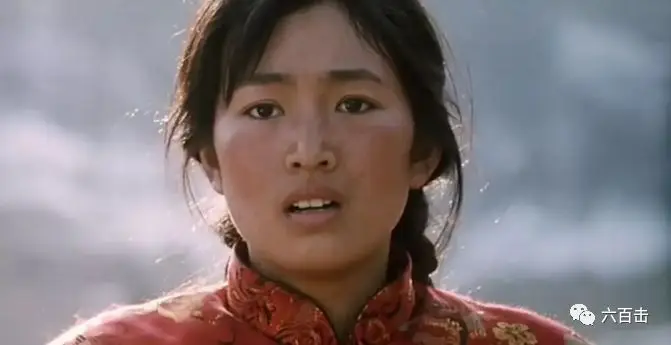
08 天注定
我们全部的希望都被
官商勾结、贫富差距、血汗工厂、夜总会
碾压
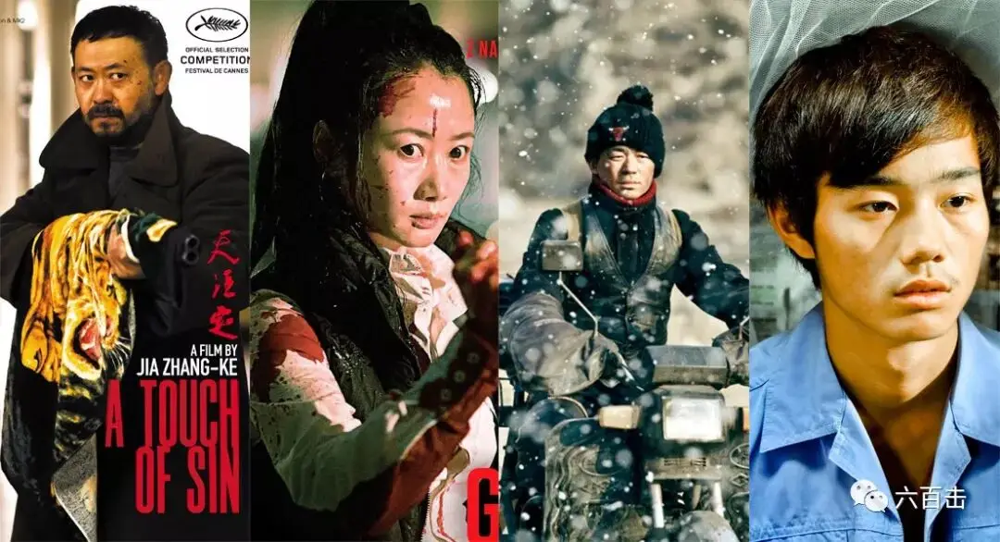
09 上帝之城
我们狰狞，我们举枪，只为了活下去
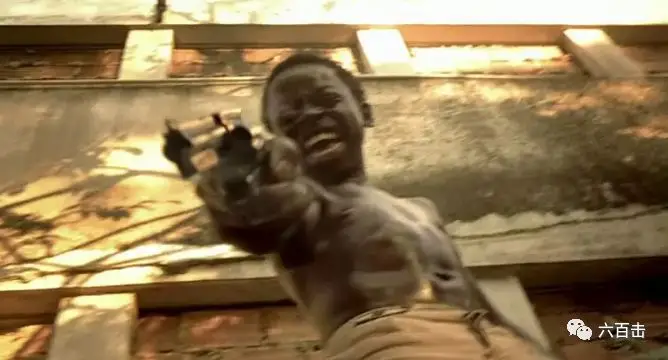
10 剪刀手爱德华
虽然我们一直在读童话
但是我们不配拥有童话
事实上我们也从未相信过童话
可悲的是，我们却从心底里渴望着童话
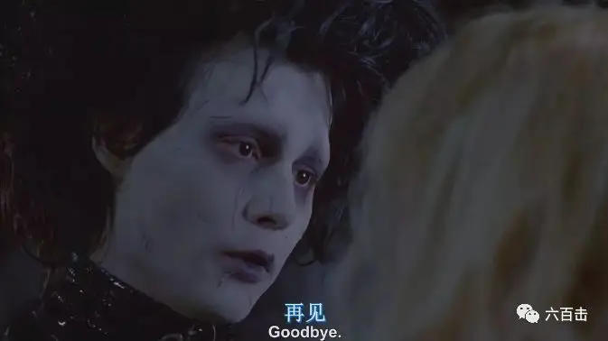
11 这个杀手不太冷
求求你了，快开门
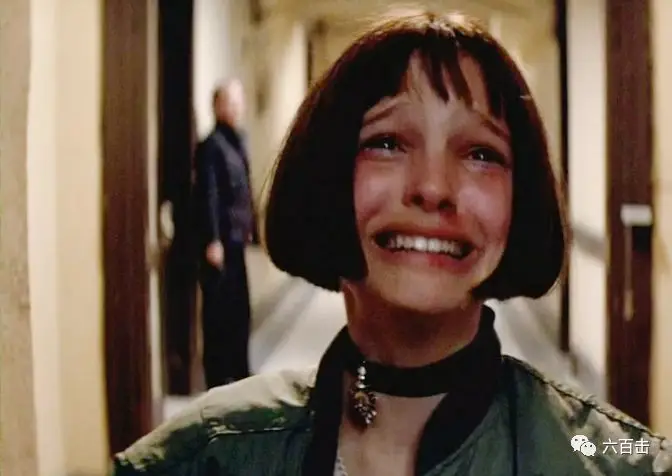
12 时时刻刻
庸俗是时时刻刻的，煎熬也是时时刻刻的
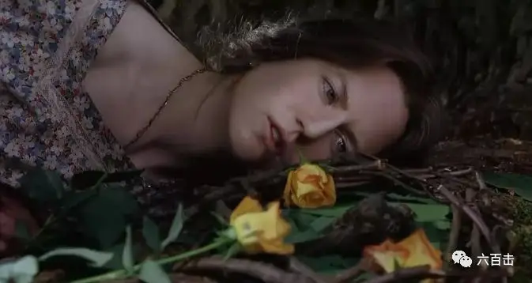
13 别让我走
克隆人可以像人类一样有血有肉并富有情感
但却没有办法像人类一样被尊重
他们长大只是为了成为人类所需要的器官
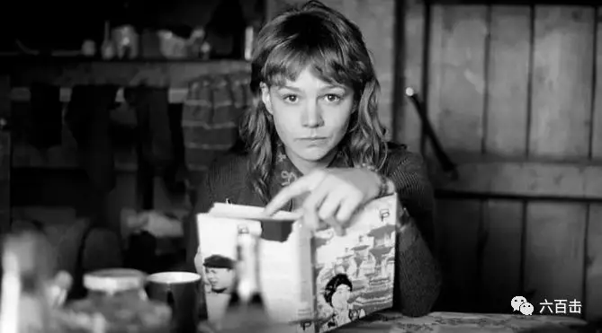
14 小鞋子
我不要当第一名
我只想当第三名
我只想要得到那双鞋子
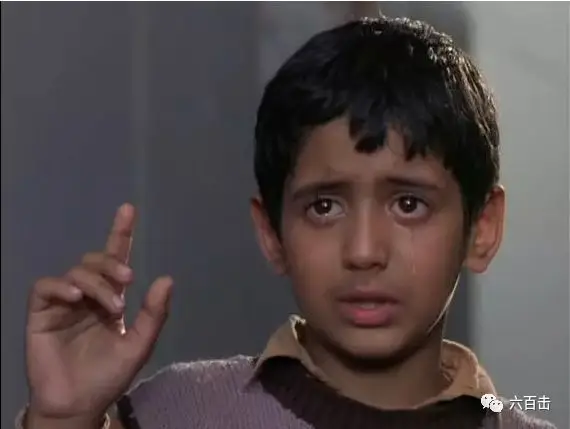
15 与安娜的四个夜晚
低端职业和丑陋外表下包藏着的却是一颗最美丽的心
可惜这份卑微的爱却被偏见和冷漠熄灭
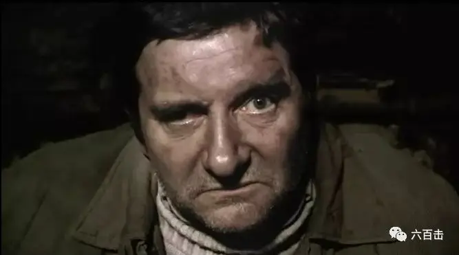
16 盲山
你永远都不知道那些被贩卖妇女的绝望
你也永远无法想象花钱买妇女的那些人是怎么样的刁民
17 亲爱的
如果有人买了我家孩子
他吃桃子过敏，千万不要给他吃桃子
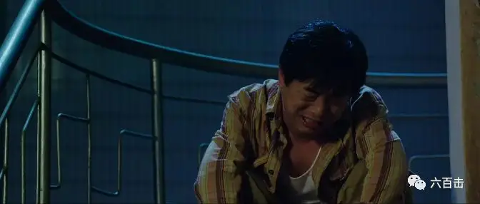
18 房间
亲爱的孩子，外面还有更美丽的世界
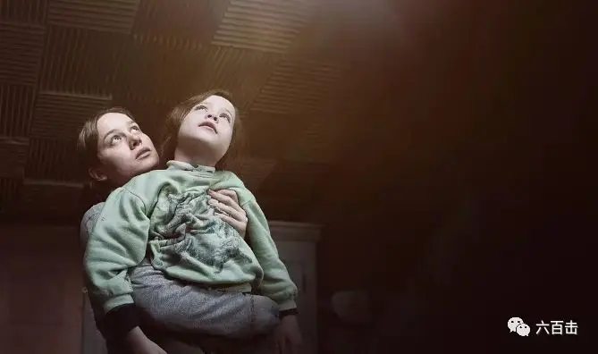
19 尤里西斯的凝视
人！你到底从历史中学到了什么
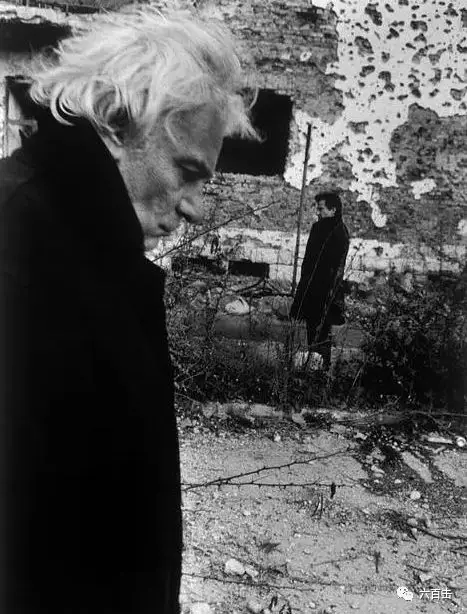
20 羞耻
你应该羞耻
因为你根本就没有能力去爱你身边的人
21 假面
人与人之间真的可以沟通么
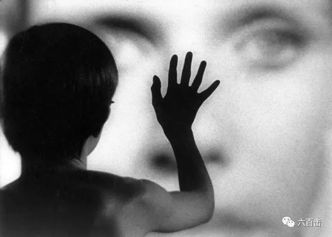
22 趣味游戏
最可怕的是
暴力成为了没有缘由的生活方式
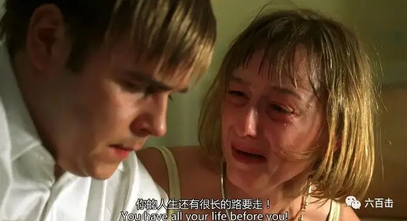
23 伊甸湖
那帮熊孩子都已经杀了人
但竟然还有人说
“他们只是孩子”、“他们本性不坏”
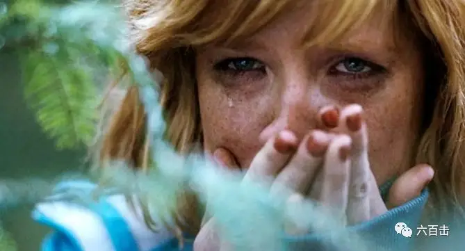
24 十诫
我笃信科学
但是科学在死亡面前却冰冷无力
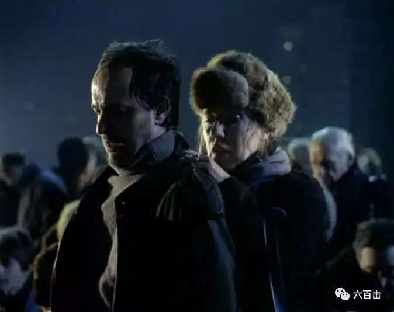
25 鸟人
我永远都不会和杀死“鸟”的人类和体制
对话
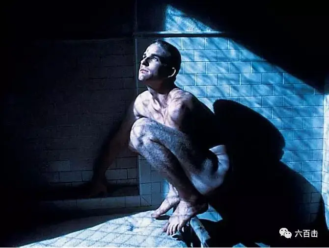
26 楚门的世界
我永远永远都不要被这个恶心虚假的世界操纵
27 现代启示录
战争使人疯狂也使人绝望
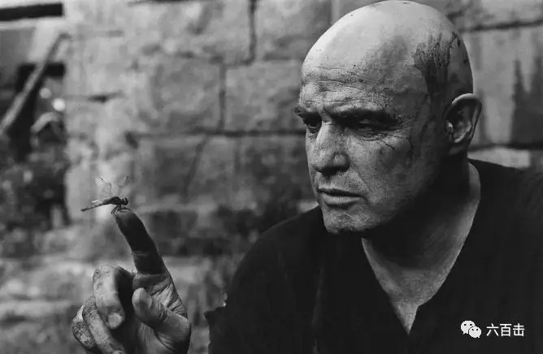
28 美国田园下的罪恶
那女孩死了，不是我们的错
我们不知道我们为什么要折磨她、嘲弄她
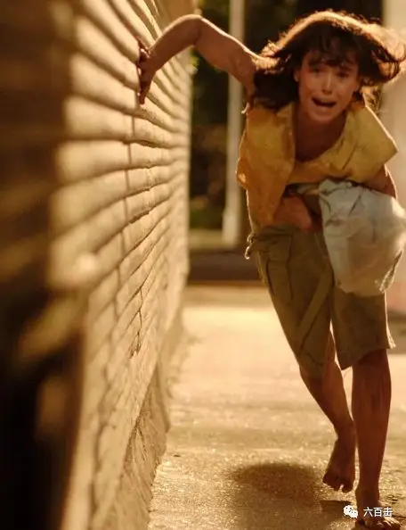
29 踏雪寻梅
当我们将悲剧连根拔起的时候
我们才发现这里面的罪恶和荒凉有多深
30 蛮荒故事
文质彬彬的文明人下一秒就会变成失控的野兽
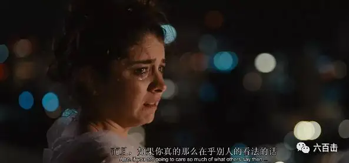
31 老男孩
笑，全世界赔你一起笑
哭，只有你一个人哭
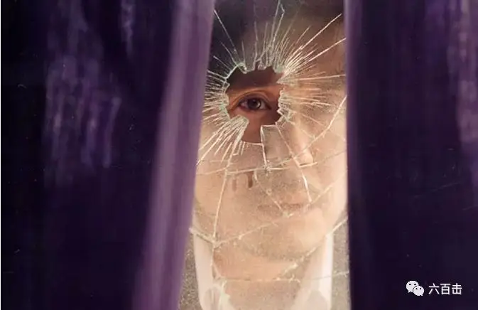
32 关于莉莉周的一切
越是喜欢的东西
越是重重的摔在地上
原来，你最憎恨的是自己
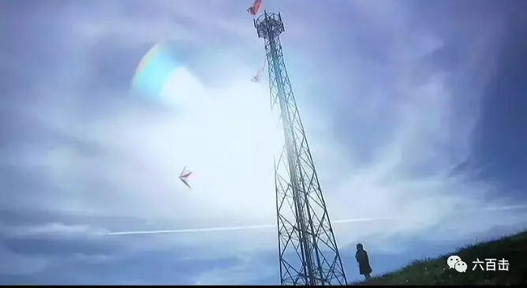
33 玛丽与马克思
我想变成任何一个人，除了自己
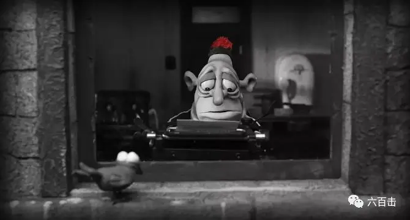
34 迷墙
我们的生活有太多无奈
我们无法改变，也无力去改变
更糟的是，我们失去了改变的想法
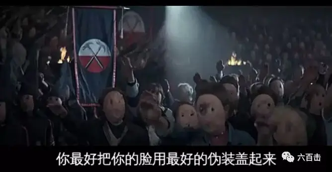
35 萤火虫之墓
哥哥，我们做错了什么
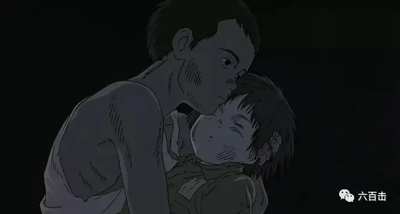
36 不夜城
她比我强，她知道自己要什么
而且不择手段
37 圣殇
残暴的江道也是一个可怜人
38 活埋
人生就是一场活埋
每个人都在黑暗、幽闭、令人窒息的困局中
苟延残喘
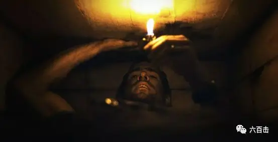
39 狗镇
除了卑劣的狗之外，这里什么都没有
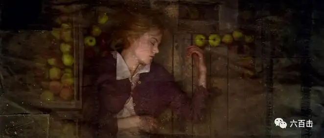
40 暗花
为什么是我
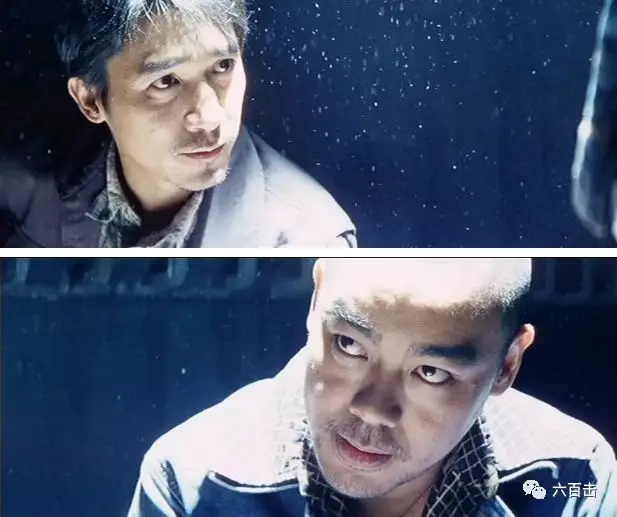
41 狩猎
孩童的无知加上大人的偏见足以毁掉任何一个人
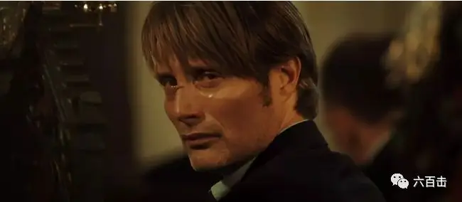
42 巴别塔
每个人都很无助
每个人都对别人存有误解
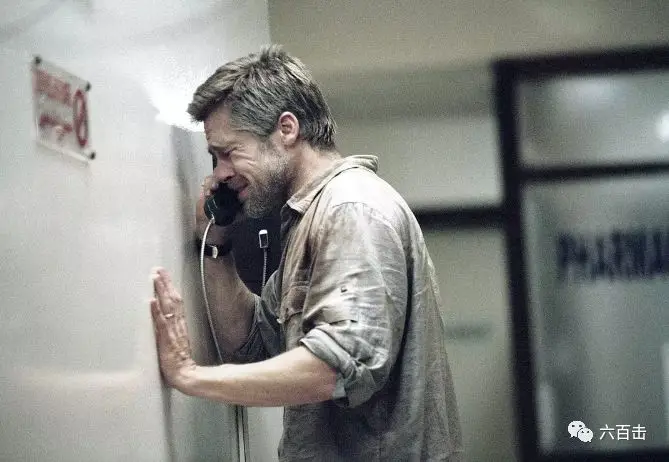
43 霸王别姬
往事不要再提，人生已多风雨
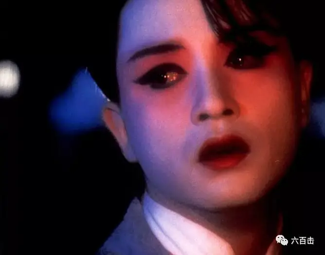
44 黑暗中的舞者
明明很残酷
但你却找不出一个“恶”人
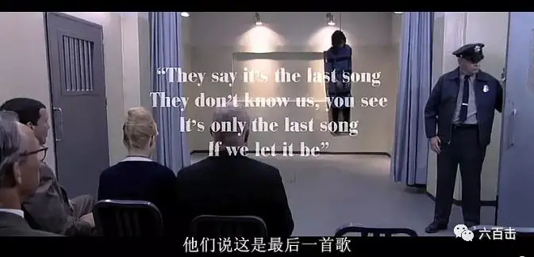
45 超脱
超脱可以让你看淡一切
但也可能成为你逃避事实的鸦片
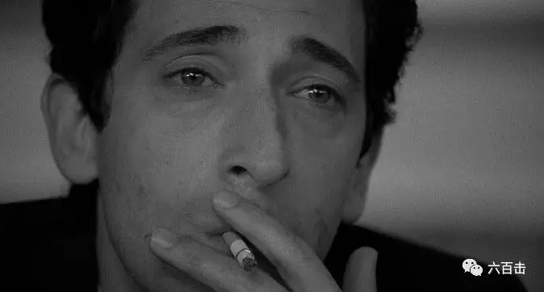
46 美国精神病人
永不满足的欲望和无法停歇的绝望混合出了美国精神病人
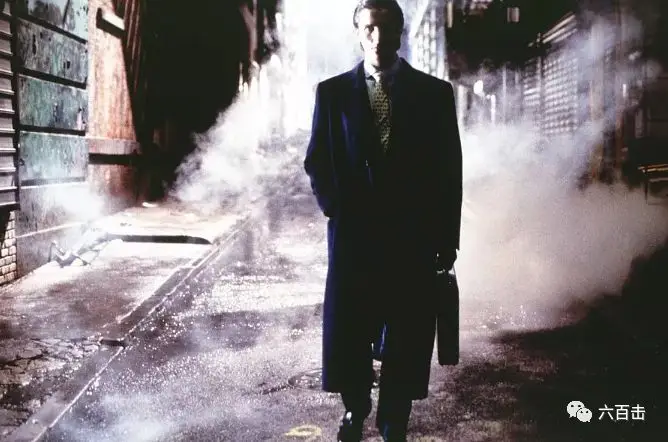
47 七宗罪
遇上高智商疯子就注定是一场悲剧
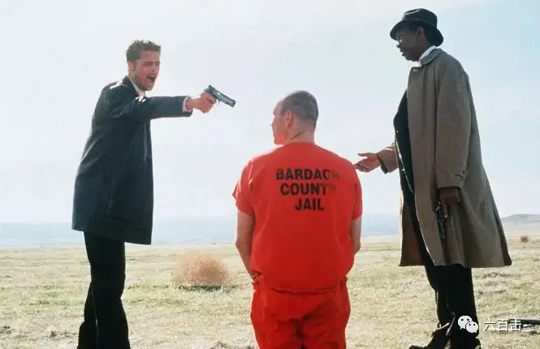
48 熔炉
残酷的不是电影，而是事实
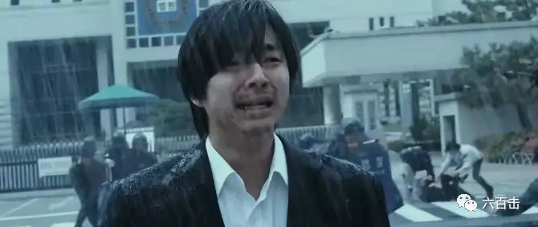
49 素媛
人渣是超越你想象力的
50 晨曦中的女孩
你知道我为什么讨厌你么？
那就是你总以为自己真的代表了上帝
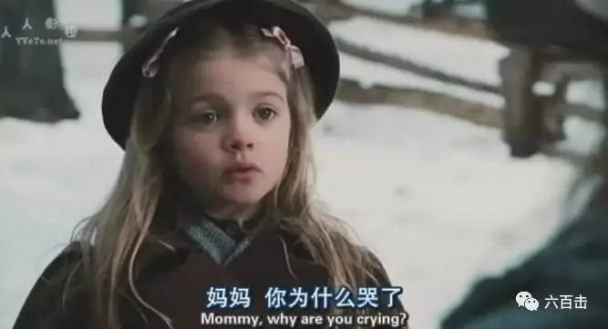
51 看不见的客人
心机男被正义套路了
干瞪眼也无力回天
52 杀人回忆
恶魔并不特别
就潜伏在你我的身边
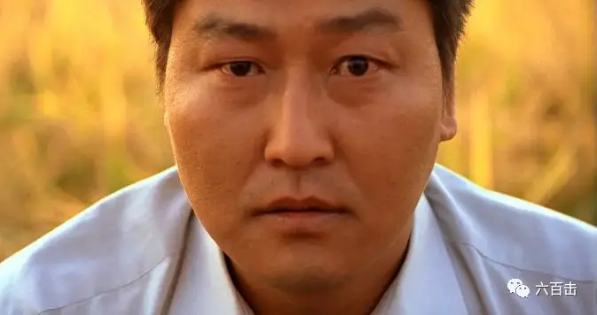
53 哭声
怪力乱神虽然可怕
无知和愚昧更是噩梦
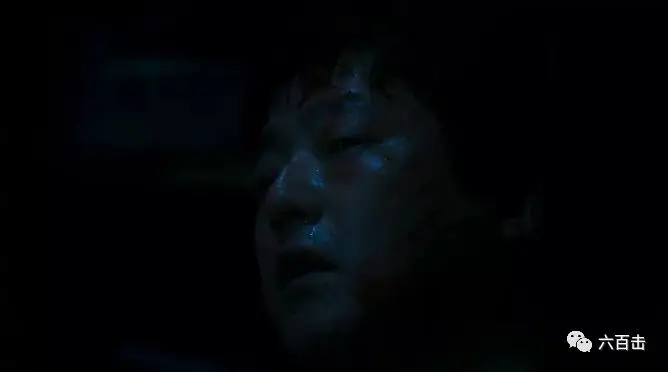
54 迷雾
迟来的希望是更大的绝望
55 机遇之歌
相同的起点，不同的选择
但是结局却都一样
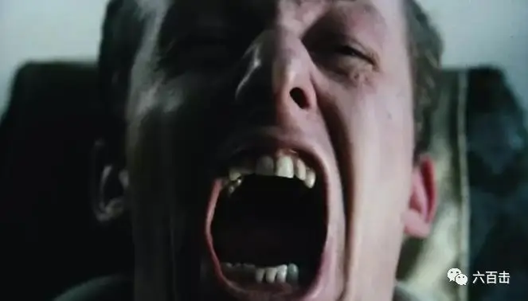
56 柏林苍穹下
到处都是绝望的灵魂
到处都是眼泪和痛苦
而对于这一切
我们只能聆听却不能介入
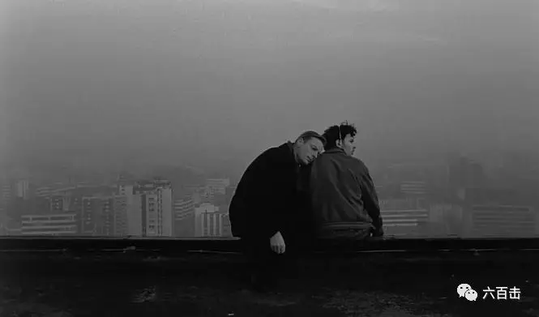
57 新桥恋人
对于我而言，爱情是全部
如果你要拿走，我只能用死亡将它留住
58 白
想要在爱情里得到平等
那将会是更大的伤害
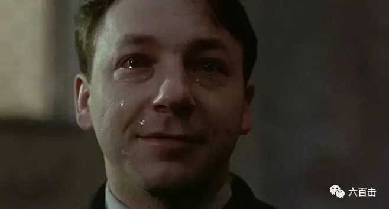
59 蓝
在与相依为命的丈夫、孩子阴阳相隔之后
你的心还可以自由么
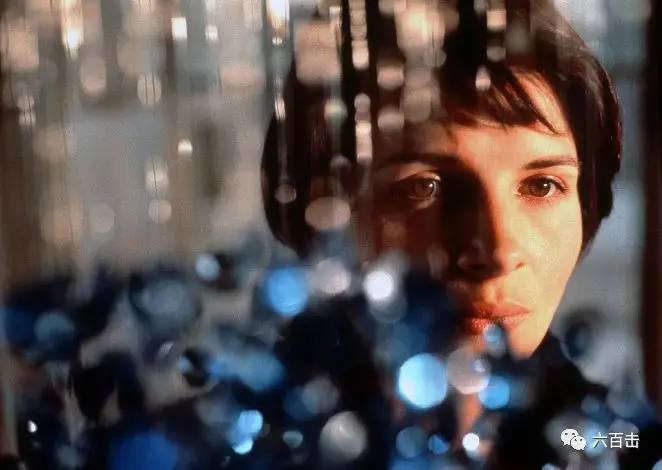
60 诗
奥斯维辛之后写诗是野蛮的
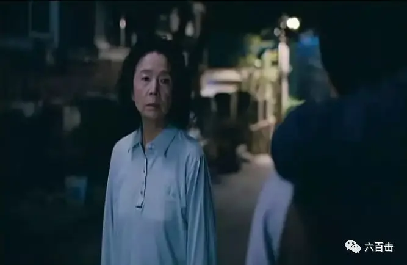
61 幻想之爱
你爱的只是你的幻想和期待
62 双面劳伦斯
在割裂和疏离中
边缘人的爱情注定是无望的
63 潜行者
你不知道我有多累
每个人都毫无信念
64 被嫌弃的松子的一生
生而为人，对不起
65 告白
我没有活着的感觉
66 恐怖直播
一句道歉真的那么难么
67 追击者
眼睁睁地看着司法系统和警察傻出新天地
眼睁睁地看着凶手逍遥法外
68 神探
所有人心里都有“鬼”，就你一个没有
如果是真的话，那就是你有问题
69 步履不停
时间过得总是很快
但你的爱总是慢半拍
70 东京物语
刚到东京的时候
妈妈说：“原来东京这么近。”
决定离开东京的时候
妈妈说：“东京真的太远了。”
71 一次别离
你敢不敢按着古兰经发誓，你没有撒谎
72 罗生门
有软弱的地方就有谎言
73 偷自行车的人
对于一个孩子来说
最残忍的是自己心目中的伟大父亲因为偷盗失去了尊严
对于一个父亲来说
最残忍的是自己偷自行车被抓
而儿子就在身旁
74 堕落天使
所有人都是寂寞的
75 花样年华
不管我们相遇过多少次
最后仍然是擦肩而过
76 东邪西毒
在我最美好的时间
我最喜欢的人不在我身边
77 骷髅街杀人事件
原来你跟他们一样，对我好就是想改变我
你好可笑啊，你以为你是谁啊？
我和这个世界一样是不可改变的
78 罗拉快跑
你可以做的就是不顾一切的向前奔跑
79 猜火车
选择了放纵青春
那就必须要忍受腐朽的味道
80 浪潮
你离纳粹只有五天
81 活着
那个时代，活着就是受罪
82 鬼子来了
谁都想置身事外
到最后，每个人都要付出代价
83 美国丽人
在虚妄的生活里
我连吵架的心情也没有
84 飞越疯人院
你想自由，有人就让你彻底变成一个傻子
85 梦之安魂曲
梦在遥远处呼唤
迷失的人该以怎样的姿态安抚自己的灵魂
86 巴黎野玫瑰
偏执的爱情会像蜡烛一样燃烧
87 喜剧之王
对不起，我是一个演员
88 大话西游
那个人好像一条狗
89 恐怖游轮
不要企图在重复中寻找已经失去的爱
90 老无所依
没有英雄，没有胜利
没有结局，也没有依靠
91 双重赔偿
我杀他为了钱，也为了女人
我没有得到钱，也没有得到女人
我发现我渐渐听不到自己的脚步声
那是死人的脚步吗？
92 日落大道
我现在仍是大明星！只是银幕变小了
93 消失的爱人
我爱过你
可后来我们做的一切就只有互相怨恨、互相控制
带给我们的只有痛苦…
这就是婚姻
94 愚昧年代
我们为什么不在我们还有机会的时候拯救我们自己
95 海豚湾
只有海豚知道人类有多凶残
96 地球之盐
我真的无法直面人类的苦难
97 发条橙子
任何人都没有权利
剥夺他人“做出正确选择的能力”
98 黄海
拼尽一切之后
躁动永远消失在茫茫的黄海之中
99 金福南杀人事件始末
太阳告诉我
再也不要让那帮畜生看到明天的太阳
100 毒战
为了救自己，所有人都可以出卖
看到这里的朋友绝对是真爱，不必再往上翻
原创作品《100双绝望的眼睛》

李大虾
从独立影评人开始，到独立电影制作人结束
这是我的梦想
这里没有挑逗你眼目情欲的小鲜肉
也没有挑动你肉体情欲的段子
更没有膨胀你今生骄傲的鸡血
我们只在乎那些最质朴真诚的作品
在那里我们才能恢复真正的想象力
我们也坚信这才是我们真正需要的

ID:Six_hundred_hits
长按二维码，一键关注
【六百击】
-END-
电影评论
尽情分享朋友圈